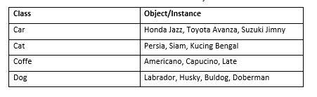
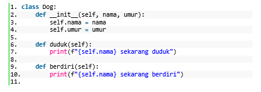

PBO atau Pemrograman Berorientasi Object menjadi salah satu paradigma
yang diterapkan hampir di seluruh bahasa pemrograman.
Kok bisa? Bagaimana konsepnya ?
Konsep dasar dari PBO adalah mengumpulkan data dan fungsi yang memiliki
hubungan kedalam suatu pulau informasi. Pulau ini disebut dengan object.
Jika dibandingkan dengan bahasa pemrograman prosedural, PBO akan melihat
suatu masalah secara keseluruhan.
Dalam PBO, alih-alih berurusan dengan data secara langsung PBO akan
memahami data mana yang akan digunakan dengan cara melakukan modeling.
Untuk melakukan modeling ini ada beberapa istilah yang perlu dipahami
yaitu class dan object.
Tipe data python merupakan komponen yang berfugsi untuk memberikan
keterangan data yang diproses dalam bahasa python.
Apa itu Class dan Object ?
Class merupakan sebuah blueprint dari object yang akan kita buat. Class
berarti cetakannya object (instance) adalah hasil dari cetakan tersebut.

Contoh pembuatan class sebuah Dog :

Apa itu method_init_ ?
Fungsi yang berada dalam sebuah class dinamakan dengan method. Semua
aturan fungsi yang sudah kita pelajari di bab sebelumnya berlaku juga
pada pembuatan method. Jika kita lihat pada baris ke-2 terdapat method
__init__, method ini merupakan spesial method yang secara otomatis akan
berjalan setiap kali object/instance dari class Dog dibuat.
Penulisan method ini diawali dengan dua kali underscore ( _ ) dan
diakhiri juga dengan dua kali underscore ( _ ).
Apa itu Parameter self ?
Pada method __init__ terdapat tiga parameter yaitu self, nama dan umur.
Parameter self merupakan sebuah parameter yang harus ada didalam
pembuatan method, dan harus ditulis di awal sebelum parameter lainnya.
Jika kita lihat pada method duduk dan berdiri, parameter self harus
ditulis walaupun tidak ada parameter lain di dalam method tersebut.
Parameter self ini berfungsi untuk mendapatkan akses secara internal
terhadap atribut atau method didalam sebuah class saat kita membuat
objeck/instance.
Artikel ini berdasarkan modul Class dan Object. Pelajari selengkapnya di
bawah ini.